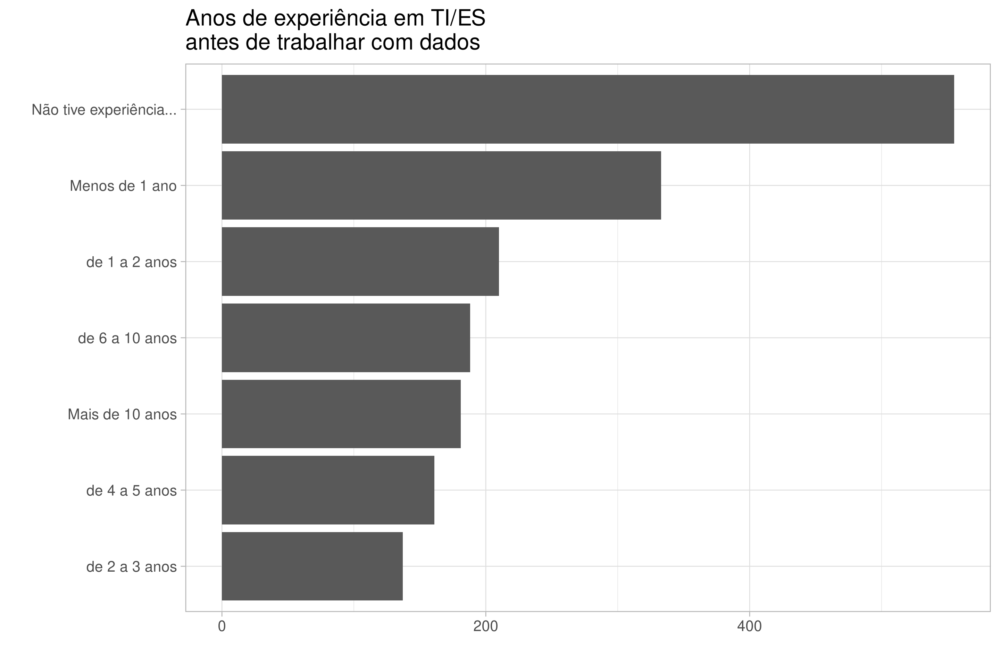
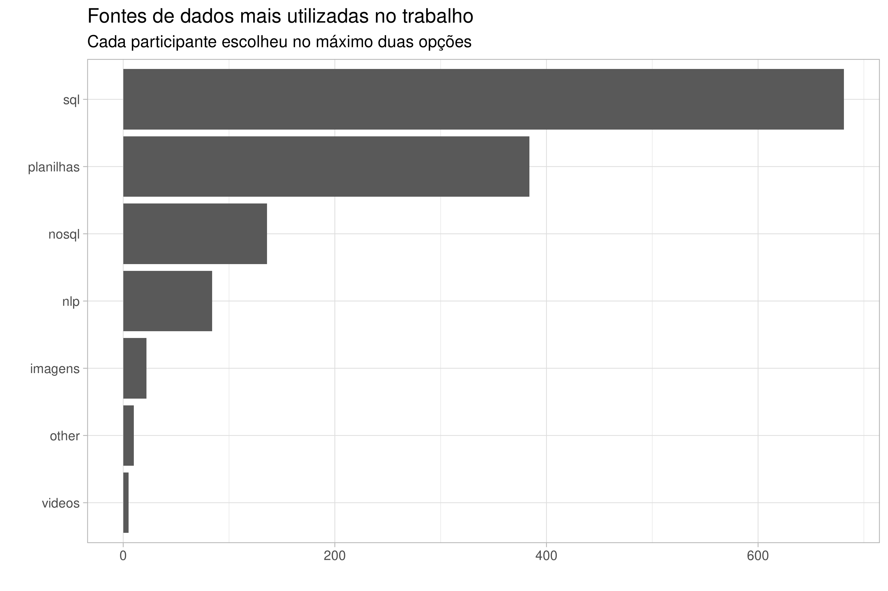
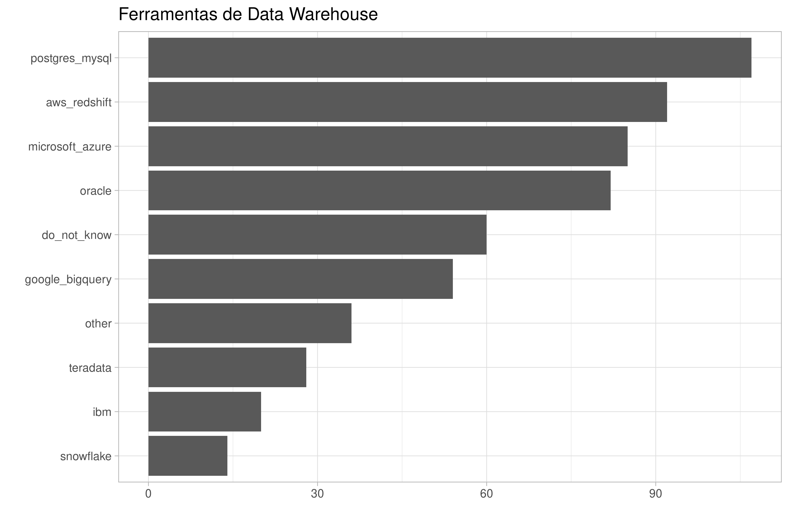
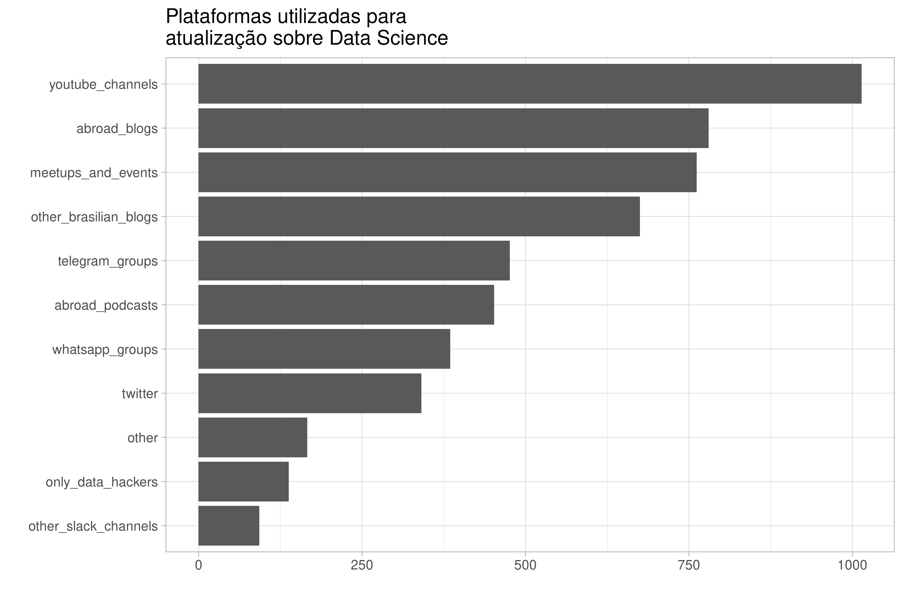
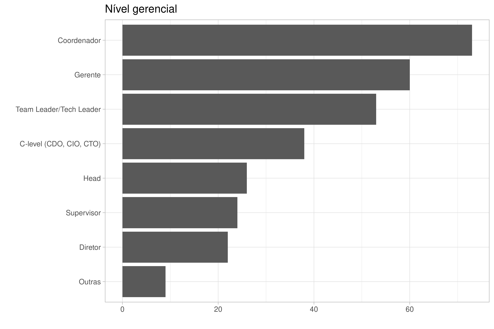

EDA da pesquisa Data Hackers
Karlo Guidoni Martins
Instalação dos pacotes
if (!require("tidyverse")) install.packages("tidyverse")## Loading required package: tidyverse## ── Attaching packages ───────────────────────────────────────────────────────────────────────────────────────────── tidyverse 1.3.0 ──## ✓ ggplot2 3.3.2 ✓ purrr 0.3.4
## ✓ tibble 3.0.3 ✓ dplyr 1.0.1
## ✓ tidyr 1.1.1 ✓ stringr 1.4.0
## ✓ readr 1.3.1 ✓ forcats 0.5.0## ── Conflicts ──────────────────────────────────────────────────────────────────────────────────────────────── tidyverse_conflicts() ──
## x dplyr::filter() masks stats::filter()
## x dplyr::lag() masks stats::lag()if (!require("here")) install.packages("here")## Loading required package: here## here() starts at /home/karlo/GoogleDrive2/git-repos/datahackers-edaif (!require("janitor")) install.packages("janitor")## Loading required package: janitor##
## Attaching package: 'janitor'## The following objects are masked from 'package:stats':
##
## chisq.test, fisher.testtheme_set(theme_light(base_size = 20))Lendo e limpando dados
df <-
read_csv(
here("data", "raw", "datahackers-survey-2019-anonymous-responses.csv")
) %>%
clean_names() %>%
# colunas com respostas 0/1 serão Não/Sim
mutate_at(
vars(
contains(
c("p3_", "p6_", "p13_", "p19_", "p29_", "p36_")
)
),
funs(
case_when(
. == 1 ~ "Sim",
. == 0 ~ "Não"
)
)
)## Parsed with column specification:
## cols(
## .default = col_double(),
## `('P0', 'id')` = col_character(),
## `('P2', 'gender')` = col_character(),
## `('P5', 'living_state')` = col_character(),
## `('P8', 'degreee_level')` = col_character(),
## `('P10', 'job_situation')` = col_character(),
## `('P12', 'workers_number')` = col_character(),
## `('P16', 'salary_range')` = col_character(),
## `('P17', 'time_experience_data_science')` = col_character(),
## `('P18', 'time_experience_before')` = col_character(),
## `('P22', 'most_used_proggraming_languages')` = col_character(),
## `('P32', 'prefered_data_hackers_initiative')` = col_character(),
## `('P35', 'data_science_plataforms_preference')` = col_character(),
## `('P35', 'other')` = col_character(),
## `('D1', 'living_macroregion')` = col_character(),
## `('D2', 'origin_macroregion')` = col_character(),
## `('D3', 'anonymized_degree_area')` = col_character(),
## `('D4', 'anonymized_market_sector')` = col_character(),
## `('D5', 'anonymized_manager_level')` = col_character(),
## `('D6', 'anonymized_role')` = col_character()
## )## See spec(...) for full column specifications.## Warning: `funs()` is deprecated as of dplyr 0.8.0.
## Please use a list of either functions or lambdas:
##
## # Simple named list:
## list(mean = mean, median = median)
##
## # Auto named with `tibble::lst()`:
## tibble::lst(mean, median)
##
## # Using lambdas
## list(~ mean(., trim = .2), ~ median(., na.rm = TRUE))
## This warning is displayed once every 8 hours.
## Call `lifecycle::last_warnings()` to see where this warning was generated.df %>%
names() %>%
as.data.frame()## .
## 1 p0_id
## 2 p1_age
## 3 p2_gender
## 4 p3_living_in_brasil
## 5 p5_living_state
## 6 p6_born_or_graduated
## 7 p8_degreee_level
## 8 p10_job_situation
## 9 p12_workers_number
## 10 p13_manager
## 11 p16_salary_range
## 12 p17_time_experience_data_science
## 13 p18_time_experience_before
## 14 p19_is_data_science_professional
## 15 p20_linear_regression
## 16 p20_logistic_regression
## 17 p20_glms
## 18 p20_decision_tree
## 19 p20_random_forest
## 20 p20_neural_networks
## 21 p20_bayesian_inference
## 22 p20_ensemble
## 23 p20_svms
## 24 p20_cnns
## 25 p20_rnns
## 26 p20_hmms
## 27 p20_gans
## 28 p20_markov_chains
## 29 p20_nlp
## 30 p20_gradient_boosted_machines
## 31 p20_cluster_analysis
## 32 p20_survival_analysis
## 33 p20_longitudinal_data_analysis
## 34 p20_joint_analysis
## 35 p20_no_listed_methods
## 36 p21_sql
## 37 p21_r
## 38 p21_python
## 39 p21_c_c_c_number
## 40 p21_dotnet
## 41 p21_java
## 42 p21_julia
## 43 p21_sas_stata
## 44 p21_visual_basic_vba
## 45 p21_scala
## 46 p21_matlab
## 47 p21_php
## 48 p21_no_listed_languages
## 49 p22_most_used_proggraming_languages
## 50 p23_sql
## 51 p23_nosql
## 52 p23_images
## 53 p23_nlp
## 54 p23_videos
## 55 p23_sheets
## 56 p23_other
## 57 p24_sql
## 58 p24_nosql
## 59 p24_imagens
## 60 p24_nlp
## 61 p24_videos
## 62 p24_planilhas
## 63 p24_other
## 64 p25_aws
## 65 p25_gcp
## 66 p25_azure
## 67 p25_ibm
## 68 p25_on_premise_servers
## 69 p25_cloud_propria
## 70 p25_other
## 71 p26_mysql
## 72 p26_oracle
## 73 p26_sql_server
## 74 p26_aurora
## 75 p26_dynamodb
## 76 p26_coachdb
## 77 p26_cassandra
## 78 p26_mongodb
## 79 p26_mariadb
## 80 p26_datomic
## 81 p26_s3
## 82 p26_postgresql
## 83 p26_elaticsearch
## 84 p26_db2
## 85 p26_ms_access
## 86 p26_sqlite
## 87 p26_sybase
## 88 p26_firebase
## 89 p26_vertica
## 90 p26_redis
## 91 p26_neo4j
## 92 p26_google_bigtable
## 93 p26_hbase
## 94 p26_other
## 95 p27_microsoft_powerbi
## 96 p27_qlik_view_qlik_sense
## 97 p27_tableau
## 98 p27_metabase
## 99 p27_superset
## 100 p27_redash
## 101 p27_microstrategy
## 102 p27_ibm_analytics_cognos
## 103 p27_sap_business_objects
## 104 p27_oracle_business_intelligence
## 105 p27_birst
## 106 p27_looker
## 107 p27_google_data_studio
## 108 p27_only_excel_gsheets
## 109 p27_no_bi_tool_at_work
## 110 p27_other
## 111 p28_sql_stored_procedures
## 112 p28_apache_airflow
## 113 p28_luigi
## 114 p28_aws_glue
## 115 p28_talend
## 116 p28_pentaho
## 117 p28_alteryx
## 118 p28_oracle_data_integrator
## 119 p28_ibm_data_stage
## 120 p28_sap_bw_etl
## 121 p28_siss_sql_server_integration_services
## 122 p28_other
## 123 p29_have_data_warehouse
## 124 p30_google_bigquery
## 125 p30_aws_redshift
## 126 p30_snowflake
## 127 p30_oracle
## 128 p30_postgres_mysql
## 129 p30_ibm
## 130 p30_teradata
## 131 p30_microsoft_azure
## 132 p30_do_not_know
## 133 p30_other
## 134 p31_data_hackers_blog
## 135 p31_data_hackers_podcast
## 136 p31_weekly_newsletter
## 137 p31_slack_channel
## 138 p31_data_hackers_bootcamp
## 139 p31_do_not_know_data_hackers
## 140 p32_prefered_data_hackers_initiative
## 141 p33_telegram_groups
## 142 p33_whatsapp_groups
## 143 p33_youtube_channels
## 144 p33_other_brasilian_blogs
## 145 p33_other_slack_channels
## 146 p33_twitter
## 147 p33_abroad_blogs
## 148 p33_abroad_podcasts
## 149 p33_meetups_and_events
## 150 p33_only_data_hackers
## 151 p33_other
## 152 p34_udacity
## 153 p34_coursera
## 154 p34_udemy
## 155 p34_height
## 156 p34_edx
## 157 p34_data_camp
## 158 p34_data_quest
## 159 p34_kaggle_learn
## 160 p34_online_courses
## 161 p34_other
## 162 p35_data_science_plataforms_preference
## 163 p35_other
## 164 p36_draw_participation
## 165 d1_living_macroregion
## 166 d2_origin_macroregion
## 167 d3_anonymized_degree_area
## 168 d4_anonymized_market_sector
## 169 d5_anonymized_manager_level
## 170 d6_anonymized_roleFunções auxiliares
make_bar <- function(data, var, reorder_labels) {
if (reorder_labels) {
data <-
data %>%
group_by({{ var }}) %>%
count(sort = TRUE) %>%
ungroup() %>%
drop_na() %>%
mutate(var_fac = fct_reorder(factor({{ var }}), n))
} else {
data <-
data %>%
group_by({{ var }}) %>%
count(sort = TRUE) %>%
ungroup() %>%
drop_na() %>%
mutate(var_fac = {{ var }})
}
data %>%
ggplot(aes(x = n, y = var_fac)) +
geom_col() +
labs(x = "", y = "")
}
make_multiple_long <- function(data, var_partial) {
data %>%
select(contains(var_partial)) %>%
pivot_longer(cols = contains(var_partial)) %>%
filter(value != 0) %>%
mutate(name = str_remove_all(name, var_partial))
}Informações originais
1. Pergunta_1 (P1) = Idade? [Mascarada]
df %>%
ggplot(aes(x = p1_age)) +
geom_bar() +
labs(x = "Idade", y = "")## Warning: Removed 24 rows containing non-finite values (stat_count).2. Pergunta_2 (P2) = Gênero? [Mascarada]
df %>%
make_bar(var = p2_gender, reorder_labels = TRUE) +
labs(title = "Gênero")3. Pergunta_3 (P3) = Atualmente você vive no Brasil?
df %>%
make_bar(p3_living_in_brasil, reorder_labels = TRUE) +
labs(title = "Residentes no Brasil")5. Pergunta_5 (P5) = Em que estado você vive hoje? [Mascarada]
df %>%
make_bar(p5_living_state, reorder_labels = TRUE) +
labs(title = "Residentes por UF")6. Pergunta_6 (P6) = Na questão anterior você disse que vive em _____ . Esse é seu estado de origem (onde nasceu ou se formou)?
df %>%
make_bar(p6_born_or_graduated, reorder_labels = TRUE) +
labs(title = "Residem no Estado de origem")7. Pergunta_7 (P7) = Qual seu estado de origem?
Dados não fornecidos
8. Pergunta_8 (P8) = Qual seu nível de ensino?
df %>%
make_bar(p8_degreee_level, reorder_labels = TRUE) +
labs(title = "Escolaridade")9. Pergunta_9 (P9) = Qual sua área de formação?
10. Pergunta_10 (P10) = Qual sua situação atual de trabalho?
df %>%
make_bar(p10_job_situation, reorder_labels = TRUE) +
labs(title = "Situação atual de trabalho")11. Pergunta_11 (P11) = A empresa em que você trabalha pertence a qual setor?
Dados não fornecidos
12. Pergunta_12 (P12) = A empresa em que você trabalha possui quantos funcionários atualmente?
# df %>%
# mutate(
# p12_workers_number = factor(
# p12_workers_number,
# levels = c(
# "de 1 a 5",
# "de 6 a 10",
# "de 11 a 50",
# "de 51 a 100",
# "de 101 a 500",
# "de 501 a 1000",
# "de 1001 a 3000",
# "Acima de 3000",
# NA_real_
# )
# )
# ) %>%
# ggplot(aes(y = p12_workers_number)) +
# geom_bar() +
# labs(
# x = "Números de funcionários",
# y = "",
# title = "Número de funcionários da empresa atual"
# )
df %>%
make_bar(p12_workers_number, reorder_labels = TRUE) +
labs(title = "Número de funcionários da empresa atual")13. Pergunta_13 (P13) = Você atua como gestor?
df %>%
make_bar(p13_manager, reorder_labels = TRUE) +
labs(title = "Atuação como gestor")14. Pergunta_14 (P14) = Qual das opções abaixo definem melhor seu cargo de trabalho atual como gestor?
Dados não fornecidos
15. Pergunta_15 (P15) = Qual das opções abaixo definem melhor seu cargo de trabalho atual?
Dados não fornecidos
16. Pergunta_16 (P16) = Qual sua faixa salarial atual? [Mascarada]
df %>%
make_bar(p16_salary_range, reorder_labels = TRUE) +
labs(title = "Faixa salarial")17. Pergunta_17 (P17) = Quanto tempo de experiência na área de dados você tem?
df %>%
make_bar(p17_time_experience_data_science, reorder_labels = TRUE) +
labs(title = "Anos de experiência na área de dados")18. Pergunta_18 (P18) = Quanto tempo de experiência na área de TI/Engenharia de Software você teve antes de começar a trabalhar na área de dados?
df %>%
mutate(
p18_time_experience_before = str_trunc(p18_time_experience_before, 23)
) %>%
make_bar(p18_time_experience_before, reorder_labels = TRUE) +
labs(title = "Anos de experiência em TI/ES \nantes de trabalhar com dados")
19. Pergunta_19 (P19) = Você se considera um profissional que atua na área de Data Science?
df %>%
make_bar(p19_is_data_science_professional, reorder_labels = TRUE) +
labs(title = "Considera-se profissional em Data Science")20. Pergunta_20 (P20) = Quais dos métodos listados abaixo você costuma utilizar no trabalho?
p_var <- "p20_"
df %>%
make_multiple_long(p_var) %>%
make_bar(var = name, reorder_labels = TRUE) +
labs(title = "Métodos utilizados")
21. Pergunta_21 (P21) = Quais das linguagens de programação listadas abaixo você utiliza no trabalho?
p_var <- "p21_"
df %>%
make_multiple_long(p_var) %>%
make_bar(var = name, reorder_labels = TRUE) +
labs(title = "Linguagens de programação utlizadas")22. Pergunta_22 (P22) = Entre as linguagens de programação listadas abaixo, qual é a que você mais utiliza no trabalho? [Mascarada]
df %>%
make_bar(p22_most_used_proggraming_languages, reorder_labels = TRUE) +
labs(title = "Linguagem de programação \nmais utilizada")23. Pergunta_23 (P23) = Quais das fontes de dados listadas você já analisou no trabalho?
p_var <- "p23_"
df %>%
make_multiple_long(p_var) %>%
make_bar(var = name, reorder_labels = TRUE) +
labs(title = "Fontes de dados analisadas no trabalho")24. Pergunta_24 (P24) = Entre as fontes de dados listadas, quais você utiliza na maior parte do tempo? Selecione no máximo duas opções que você mais utiliza.
p_var <- "p24_"
df %>%
make_multiple_long(p_var) %>%
make_bar(var = name, reorder_labels = TRUE) +
labs(
title = "Fontes de dados mais utilizadas no trabalho",
subtitle = "Cada participante escolheu no máximo duas opções"
)
25. Pergunta_25 (P25) = Quais das opções de Cloud listadas abaixo você utiliza no trabalho?
p_var <- "p25_"
df %>%
make_multiple_long(p_var) %>%
make_bar(var = name, reorder_labels = TRUE) +
labs(title = "Serviços de nuvem utilizadas no trabalho")26. Pergunta_26 (P26) = Quais dos bancos de dados/fontes de dados listados abaixo você utiliza para consultar informações, e posteriormente analisar, no trabalho?
p_var <- "p26_"
df %>%
make_multiple_long(p_var) %>%
make_bar(var = name, reorder_labels = TRUE) +
labs(title = "Fontes de dados para consulta e análise")27. Pergunta_27 (P27) = Quais as Ferramentas de Business Intelligence você utiliza no trabalho?
p_var <- "p27_"
df %>%
make_multiple_long(p_var) %>%
make_bar(var = name, reorder_labels = TRUE) +
labs(title = "Ferramentas de BI")28. Pergunta_28 (P28) = Quais as tecnologias são utilizadas como ferramenta de ETL no seu trabalho?
p_var <- "p28_"
df %>%
make_multiple_long(p_var) %>%
make_bar(var = name, reorder_labels = TRUE) +
labs(title = "Ferramentas de ETL")29. Pergunta_29 (P29) = Sua organização possui um Data Warehouse?
df %>%
make_bar(p29_have_data_warehouse, reorder_labels = TRUE) +
labs(title = "Utilização de Data Warehouse na empresa")30. Pergunta_30 (P30) = Qual tecnologia utilizada como plataforma do Data Warehouse?
p_var <- "p30_"
df %>%
make_multiple_long(p_var) %>%
make_bar(var = name, reorder_labels = TRUE) +
labs(title = "Ferramentas de Data Warehouse")
31. Pergunta_31 (P31) = Quais das iniciativas do Data Hackers que você já acessou/acompanhou?
p_var <- "p31_"
df %>%
make_multiple_long(p_var) %>%
make_bar(var = name, reorder_labels = TRUE) +
labs(title = "Acesso às iniciativas do Data Hackers")32. Pergunta_32 (P32) = Entre as iniciativas do Data Hackers qual a sua preferida?
df %>%
make_bar(p32_prefered_data_hackers_initiative, reorder_labels = TRUE) +
labs(title = "Preferência pelas iniciativas \ndo Data Hackers")33. Pergunta_33 (P33) = De quais outras formas que você costuma se atualizar no mundo dos dados?
p_var <- "p33_"
df %>%
make_multiple_long(p_var) %>%
make_bar(var = name, reorder_labels = TRUE) +
labs(title = "Plataformas utilizadas para \natualização sobre Data Science")
34. Pergunta_34 (P34) = Em quais dessas plataformas listadas abaixo você já iniciou/completou cursos na área de Data Science?
p_var <- "p34_"
df %>%
make_multiple_long(p_var) %>%
make_bar(var = name, reorder_labels = TRUE) +
labs(title = "Plataformas de cursos (iniciados ou completos)")35. Pergunta_35 (P35) = Dentre as plataformas listadas abaixo qual foi a sua preferida para cursos de Data Science?
p_var <- "p35_"
df %>%
make_multiple_long(p_var) %>%
mutate(value = str_to_lower(value)) %>%
group_by(value) %>%
filter(n() > 50) %>%
make_bar(var = value, reorder_labels = TRUE) +
labs(
title = "Plataformas de curso preferidas",
subtitle = "Respostas que ocorreram 50 vezes ou mais"
)36. Pergunta_36 (P36) = Você deseja participar do sorteio?
df %>%
make_bar(p36_draw_participation, reorder_labels = TRUE) +
labs(title = "Desejo em participar do sorteio")Informações derivadas
1. Derivado_1 (D1) = Macrorregião em que mora
df %>%
make_bar(d1_living_macroregion, reorder_labels = TRUE) +
labs(title = "Residentes por macrorregião")2. Derivado_2 (D2) = Macrorregião em que nasceu
df %>%
make_bar(d2_origin_macroregion, reorder_labels = TRUE) +
labs(title = "Macrorregião de origem")3. Derivado_3 (D3) = Área de formação anonimizada
df %>%
make_bar(d3_anonymized_degree_area, reorder_labels = TRUE) +
labs(title = "Área de formação")4. Derivado_4 (D4) = Setor de mercado anonimizado
df %>%
make_bar(d4_anonymized_market_sector, reorder_labels = TRUE) +
labs(title = "Atuação por setor de mercado")5. Derivado_5 (D5) = Nível de gerência anonimizado
df %>%
make_bar(d5_anonymized_manager_level, reorder_labels = TRUE) +
labs(title = "Nível gerencial")
6. Derivado_6 (D6) = Cargo anonimizado
df %>%
make_bar(d6_anonymized_role, reorder_labels = TRUE) +
labs(title = "Cargo de atuação")Continua…
Cruzar informações: mesmos gráficos com
fillCorrelações